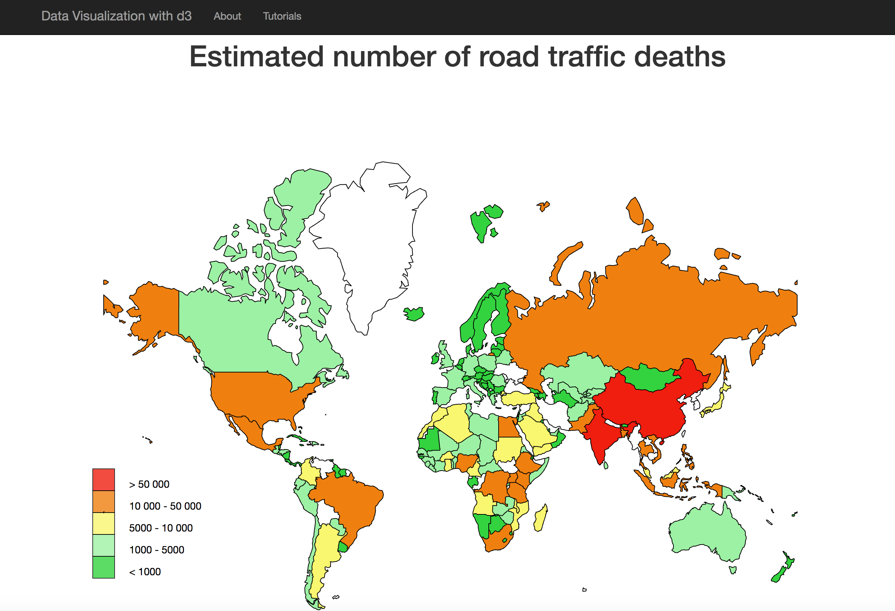
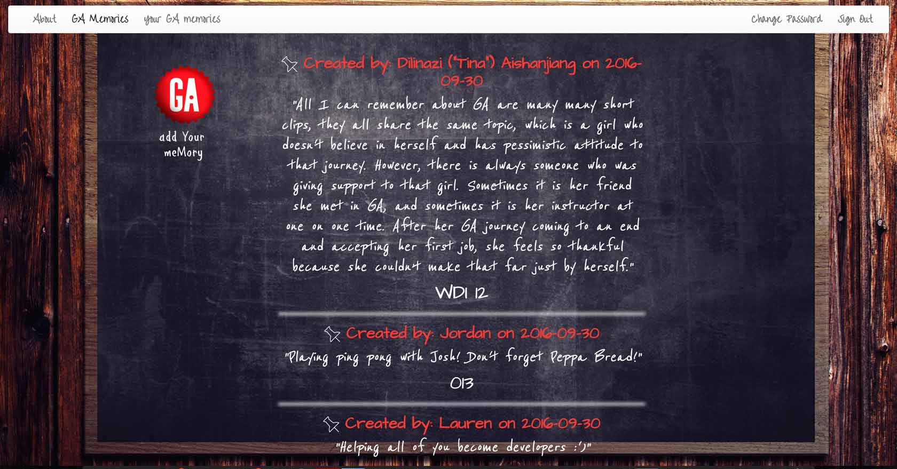
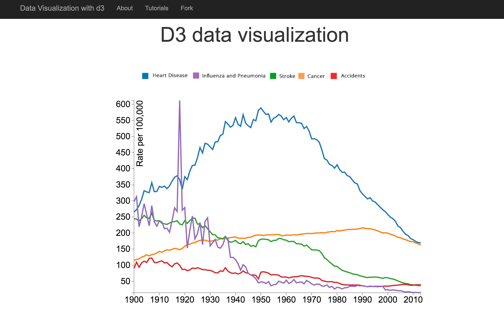

D3 MAP
The Global status report on road safety 2013 [Global Health Observatory (GHO) data] presents information on road safety from 182 countries, accounting for almost 99% of the world’s population. About 1.25 million people die each year on the world's roads and between 20 and 50 million sustain non-fatal injuries. Young adults aged between 15 and 44 years account for 59% of global road traffic deaths.
D3 map represents that latest datasets from World Health Organization. Chart shows estimated number of roads traffic deaths per country.
GA MEMORY BOOK
GA Memory Book was my capstone project, and I had so much fun building it. The main purpose of this app is to connect people that successfully finished GA.
Each user can see other people's GA memories/stories without signing in. Each user can create an account and post memories. Also, user’s memories can be updated and deleted. I have built admin functionality too, so I can monitor, modify, and delete them if needed.
GA Memory Book is a full stack application. The back end was built using Rails and the front end using Ember.js. This was my first application that I built using a front end framework. Ember.js is extremely powerful front end framework, and I look forward to delving deeper into it. The styling was done using CSS.
D3
This project was scoped and prepared in two days. I have been interested in learning D3 for a long time, and this was a perfect opportunity to delve into this exciting and powerful JavaScript library. To demonstrate my understanding of D3, I used publicly available CDC datasets, generating two plots, one of which was a multiline chart. I was able to visually represent the change in death rates over time (1900-2013) for five major causes of death (heart disease, accidents, influenza, stroke, cancer).
This was a group project. I built this single page app with colleagues Alex Braun and Joshua Mitchell. We built an e-commerce webiste that sells art prints. This is a fully functional e-commerce single page application that has Stripe (3rd party API) incorporated, so users can sign up to purchase art. Note that Stripe is working in test mode. To test our code, you can purchase prints using test card number 4242 4242 4242 4242.
Since this was a group project, we collaborated throughout the entire project. I was responsible for creating the admin page. The admin page allows the admin to log in with a special e-mail/password combination. In addition, the admin is able to add products for sale as well as to edit and delete them. Ultimately, the admin decides what is going to appear on the front page to users. All the work for the admin page was mostly performed on the back end.
Front end techologies: HTML, Bootstrap, CSS, jQuery. Back end technologies: Express.js. Database: MonogoDB. AJAX was used for the communication with the back end.
This is my first full stack web application. I built the front end using HTML, CSS, Bootstrap, JavaScript, jQuery. Also, I have built back end API in Rails. AJAX was used for the communication with the back end.
Job Search Helper is intended to help people when conducting a job search. Job Search helper provides a personal database where users can store information regarding jobs for which they would like to apply. The web site is designed such that users can insert, update, and delete all of their stored information.